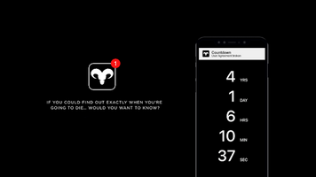
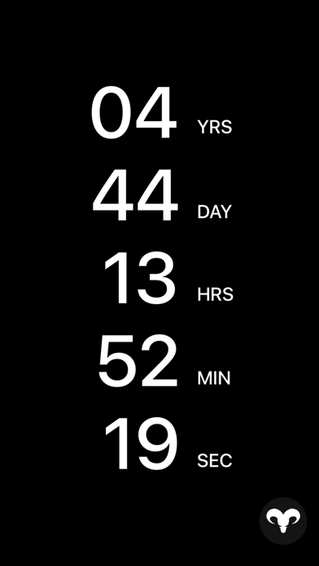

第一次装 Countdown App？5 分钟带你玩明白这款整蛊小玩具
完全不懂也没关系——从下载安装到第一次被吓到，手把手带你走完 Countdown App 的完整上手流程，顺便聊聊新手最关心的几个问题。
这篇能带你从完全不懂到用起来 Countdown App，不需要任何基础——你甚至不需要看过那部叫《Countdown》的恐怖电影，也能完整体验这款 App 想给你的全部乐趣。
它到底是干嘛的？一句话讲明白
Countdown App 是一款"死亡倒计时"主题的整蛊玩具。打开它，屏幕上会出现一串从几十万分钟开始的随机数字，以每秒一格的速度往下跳，数字归零的那一刻——它会用红色警报、闪白屏幕、闪光灯乱闪、低沉的摇篮曲加震动——把你结结实实吓一跳。
就像愚人节那天室友突然跳出来拍你肩膀说"你被整了"，只不过这次拍你肩膀的是一个你自己装在手机里的 App，而且只有你知道它在倒计时。
五分钟上手：从下载到第一次被吓到
第一步：装上去
直接从应用商店搜 Countdown 就能找到，去它的官网也能拿到正规渠道的下载入口。Android 用户走 Google Play，iOS 用户走 App Store——都有正规上架版本。如果你手头是第三方渠道下的 APK，装好之后进应用权限页面快速扫一眼，确认它没索要短信、通话、联系人这些无关权限，基本就没问题。官方下载渠道的 APK 不会有额外打包的风险，装起来更放心。

第二步：走一遍协议和起名
第一次打开会弹一段用户协议，大意是"你知道这是个整蛊玩具，被吓到了别来找我"——点同意就行。然后它会让你输入你的名字，随便输一个，App 会把名字和随机生成的初始倒计时绑定在一起。
第三步：等数字往下跳
输入完名字直接进入主界面，屏幕上就是黑白配色的倒计时数字，每秒跳一格，没有任何其他按钮或菜单。你什么都不用做——就放那儿让它自己走。
第四步：等它归零
这就是整个 App 最核心也最纯粹的玩法。你可以把手机放一边，做自己的事，偶尔瞄一眼数字又少了多少。等它跳到零的那一秒——
红色警告跳出来、屏幕开始闪白、闪光灯爆闪、低沉的摇篮曲响起、手机剧烈震动——整个人会被吓得一哆嗦，然后一切归于平静，数字重新随机生成，继续往下跳。
这就是 Countdown App 想给你的全部体验。开发者从第一天起就说了：它不是游戏、不是工具、不是社交平台，它就是一个整蛊玩具。

上手后先玩这三个功能
走完上面的流程，你已经完整体验过 Countdown App 的核心玩法了。接下来建议你先碰这三个最有意思的点：
1. 改系统时间触发"协议被破坏"演出
进手机设置把时间往前或往后跳几分钟再回来，App 会检测到时间跳变，立刻切换到"User Agreement Broken"状态——红色警告常驻、数字被冻结在当前位置、音效变成警报、屏幕不再是黑白而是持续闪白。这时候手机变成了一个小型闹鬼装置。
别担心，改回正确时间并让 App 后台挂几分钟不动，这个状态会自动解除，倒计时接着原来的数值继续走，一点没变。开发者甚至在公开场合说过，这种玩法完全在设计范围内，App 不会因为你反复触发就锁死或者封号。想了解更细的玩法参数，可以去countdownapp文档翻一下。
2. 看一次"改变命运"广告
在主界面长按屏幕会弹出一个"Watch Ad to Change Your Fate"的选项。看一条 30 秒的广告，倒计时会随机变化——可能变少，可能变多，完全随机。有人说这是唯一能主动影响倒计时的方式，开发者没否认也没证实。
3. 拍一张带数字水印的照片
某些版本的 Countdown App 支持拍照功能——你点一下屏幕，会调用前置摄像头拍一张自拍，然后把当前的倒计时数字作为水印叠在照片上，保存到系统相册。这个功能是整蛊朋友的终极武器：拍一张"你和你的死亡倒计时"合影，发给朋友看。
小白的三个常见疑问
疑问一：这玩意儿会不会是病毒？
直接结论：不是。它申请的权限非常少——通知、震动、相机、相册、网络访问、后台运行——没有短信、通话、联系人、麦克风、完整位置这些敏感权限。开发者 Ryan Boyling 是英国 Brighton 的独立开发者，身份公开可追溯，App 在 Google Play 和 App Store 正规上架，不是那种来路不明的 APK。
不过有一个小提醒：如果你从第三方渠道下载 APK 安装包，务必核对 MD5 校验值，防止被人二次打包植入恶意代码。
疑问二：倒计时归零之后会真的怎样吗？
不会。归零是 Countdown App 整蛊演出的高潮——声光震全方位惊吓，然后一切归零、数字重新随机生成。它就是个玩具，没有任何后续行为，卸载之后本地数据全部清除，开发者服务器侧也没有你的任何数据。
疑问三：改系统时间之后倒计时会被重置吗？
不会。前面说的"协议被破坏"只是 UI 层的声光演出，底层的倒计时数值没有被修改，只是被冻结了。恢复之后倒计时继续从被冻结的地方向前走。唯一能改变倒计时数值的方式只有两个：看广告随机变化，或者清除数据/卸载重装重新随机生成。
进阶方向
如果你玩了几天觉得"就这样？"，可以试试整蛊玩法的进阶路线——找几个同样装了 Countdown App 的朋友，互相交换彼此的倒计时截图，比谁的数字更大或者更小；或者把 App 装在备用机上，故意让朋友随手翻到，体验一下"卧槽这是什么"的瞬间。这款 App 最妙的地方从来不是它本身，而是你拿着它的时候能制造出来的那些时刻。如果你想系统地啃完整的玩法细节，GitHub、Gitee 和 GitCode 上都有社区维护的完整资料，国内外访问都方便。